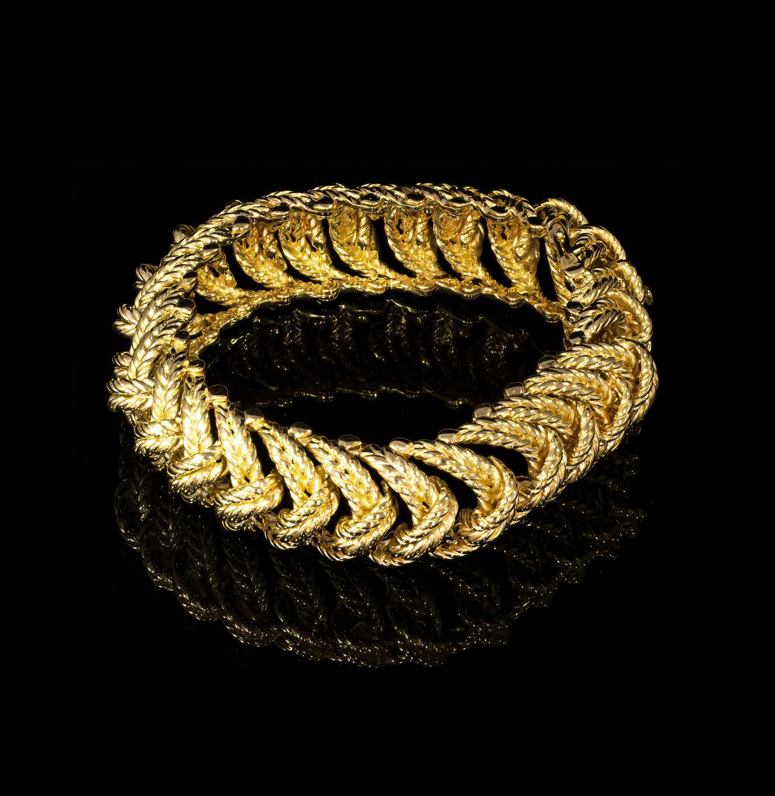

Mid-Century
Boucheron Braid Bracelet
Rare 1940s bracelet representing a stylised braid in 18k yellow gold. Signed Boucheron Paris and numbered; French work.
- Date & origin
- 1940s · Signed Boucheron
- Era
- Mid-Century · 1940s – 1950s
- Category
- Bracelets
- Price
- Price on request
Condition report available on request · Insured, tracked worldwide shipping